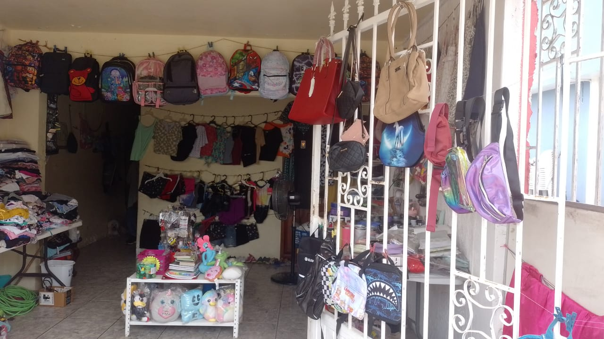

"Barato, bonito y de calidad"
EnBazar Los Twins, tu bazar de confianza desde 2018, nos enorgullece ser un negocio familiar que ha crecido y mejorado constantemente. Nos ubicamos en la Calle Independencia #504 en Tres Valles, Veracruz, México. Desde nuestros inicios, nos hemos esforzado por ofrecerte productos de la mejor calidad, trayendo mercancía exclusiva directamente del extranjero. Además, hemos trabajado en mejorar continuamente nuestro espacio para brindarte una experiencia de compra agradable.

Tenemos una increíble variedad de productos para toda la familia, ¡y siempre a precios muy accesibles! Nos adaptamos a tus necesidades, por eso también contamos con un conveniente sistema de apartado.Aquí te dejamos un vistazo a lo que puedes encontrar:
Aunque tenemos competencia cercana, estamos seguros de que no te arrepentirás de visitarnos. En Bazar Los Twins, valoramos tu compra y te ofrecemos beneficios exclusivos:
En Bazar Los Twins, nuestro objetivo principal es crear una amistad con cada cliente. Queremos que te vayas satisfecho, feliz y sin preocupaciones por los precios y las formas de pago, deseando volver pronto a nuestra tienda. Buscamos ser más reconocidos en nuestra comunidad gracias a tu confianza y poder promocionarte cada vez más productos increíbles.
Siempre te atenderemos con el mayor respeto, y agradecemos que tú también nos brindes el mismo trato.
¿Listo para descubrir todo lo que tenemos para ti? ¡Te esperamos en nuestra tienda o contáctanos!